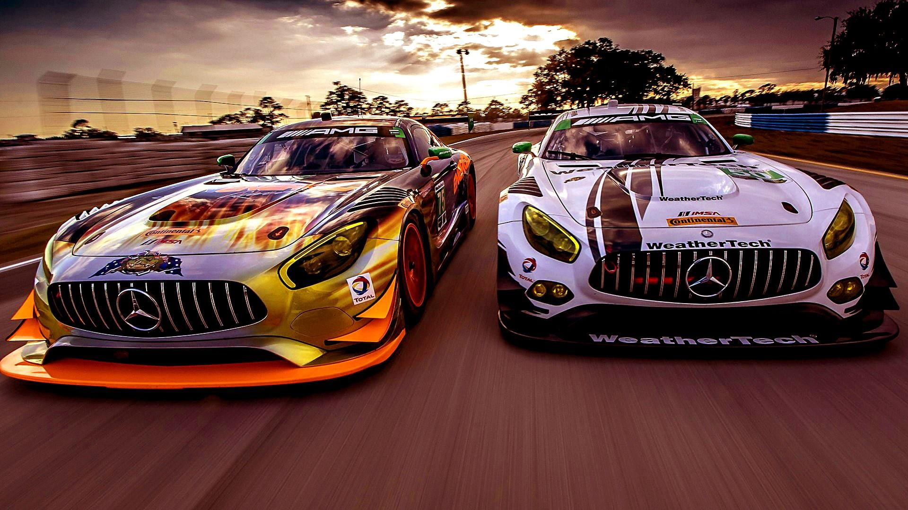

В 1997 г. ФИА, в ответ на рост интереса к гонкам ГТ со стороны производителей, таких как Мерседес-Бенц,
Порше, Паноз, взяла под свой контроль набирающую популярность Серию BPR Global GT, ограничив длину гонок
в 500 км (вместо прежних 4х часов), выпустив новый, более либеральный технический регламент и передав
коммерческие вопросы в руки одного из основателей BPR Global GT, Стефана Рателя, получившего поддержку
со стороны европейского кабельного канала Евроспорт. Новые производители строили омологационные партии в
25 машин, чтобы в полной мере пользоваться новыми правилами, допускающими фактически спорт-прототипы.
Chrysler, Lister и Marcos, не желавшие втягиваться в новую гонку расходов, перешли в низший класс GT2.
Это оказалось мудрым решением, ибо Мерседес полностью доминировал в старшей категории, так что остальные
участники после бесперспективной двухлетней борьбы с заводскими Mercedes-Benz CLK-GTR, покинули класс
GT1, упразднённый в 1999 г. В оставшейся младшей категории GT2 доминировал Chrysler Viper, изредка
встречая конкуренцию со стороны стареющих Porsche 993 GT2 и Lister Storm.
С тем чтобы дать возможность участия для менее подготовленных пилотов была учреждена категория N-GT.
Если в старшем классе было представлено несколько марок, то в младшей выступали практически одни Ferrari
и Porsche, однако эксплуатационные расходы были низки и это привлекало участников. Для повышения статуса
чемпионата SRO добавила в календарь гонку 24 часа Спа, где прежде участвовали кузовные машины. Также FIA
запретила участие заводских команд, хотя некоторые команды пользовались у своих производителей
преференциями, особенно в стане команд Porsche.
После 2004 г. FIA изменила названия классов с GT и N-GT на GT1 и GT2 соответственно, а также несколько
либерализовала технический регламент, допустив центрально-моторные суперкары. Хотя это было сделано с
расчетом на участие машин Saleen S7, но наибольшую выгоду извлек Maserati MC12, полу-прототип созданный
на базе Феррари Энцо, так что FIA была вынуждена ограничить аэродинамику этих машин. В итоге система
весовых балластов более-менее уравняла участников, сделав борьбу более плотной и позволяя
джентльмен-драйверам навязывать борьбу более опытным и профессиональным коллегам, среди которых были и
гонщики Ф1.